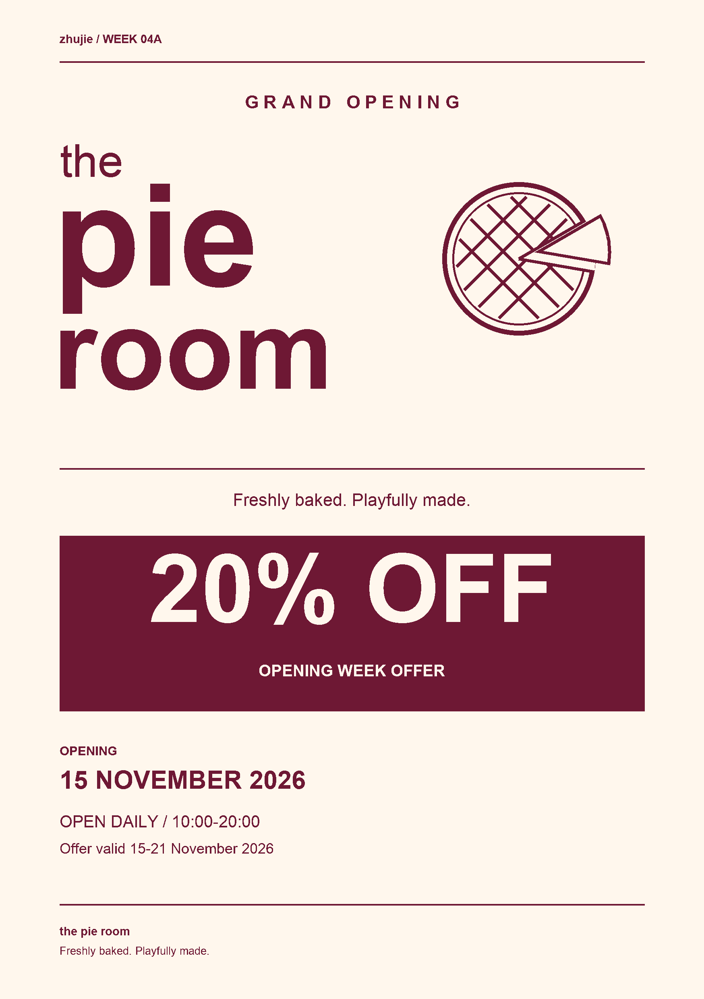

Exercise 04A: Constraints
Date:
Promote a newly opened pie cafe using A5, two colours, Arial and no paid stock imagery.
Research
- W3C Contrast Minimum
Useful for thinking about contrast in this online presentation. Also inspect the flyer at its actual printed size; screen contrast alone is not a complete print proof.
Add your own notes, screenshots and actual visit dates.
The course brief specifies a paired discussion, a quick flyer and a second paired task listing 20 design constraints. The cafe name and business details below are classroom assumptions authorised by zhujie.
Process Work
| Required or assumed item | Model specification |
|---|---|
| Format / required | A5 portrait, 148 × 210 mm, single-sided |
| Typography / required | Arial only |
| Palette / model choice | Cherry Wine #6E1834 and Cream #FFF7ED |
| Cafe / assumed | the pie room |
| Opening / assumed | 15 November 2026 |
| Hours / assumed | Daily, 10:00–20:00 |
| Offer / assumed | 20% off, 15–21 November 2026 |
This AI-assisted classroom model follows the supplied format, font, colour and content limits. The 20-item list is a proposed constraints worksheet; it is not a transcript of a paired discussion.
Open the 20 proposed constraints
- A5 finished size. Keep the composition within 148 × 210 mm.
- One side. All required information must fit on one face.
- Two colours. Use only cream and cherry wine in the model.
- Arial. Use Arial for all text, including the wordmark study.
- No paid stock budget. Draw original imagery or use permitted supplied material.
- Cafe logo. Make the name identifiable as a wordmark.
- Opening date. Place the date where it is easy to find.
- Opening hours. Keep the hours readable at the printed size.
- Discount. Make the offer clear without hiding its limits.
- New pie-specialist cafe. Communicate the type of business.
- Clear reading order. Choose a primary, secondary and supporting message.
- Safe margins. Keep essential content away from trim edges.
- Small-print legibility. Avoid reducing details until they are unreadable.
- Offer period. Give the proposed promotion a clear duration.
- Accurate information. Check spelling, dates and numerical consistency.
- Single consistent wordmark. Do not change the cafe name across versions.
- Simple original drawing. Keep the pie icon feasible to draw independently.
- Limited production time. Agree a realistic making and checking schedule.
- Paired decisions. Discuss choices and record both contributions.
- Clear final export. Prepare a readable image or PDF at the correct size.
- Use Arial for the name, offer and practical details.
- Use cream and cherry wine as the two colours.
- Use a simple geometric pie drawing instead of paid stock imagery.
- Make the offer prominent, then place the opening date and hours below.
- Keep the selected model image unchanged, as requested by zhujie.
Final Outcome

Reflection
Draft for review.
The flyer model shows how a few clear choices can work within a limited brief. Arial and two colours make the main information easy to organise. The large discount catches attention, while the opening date and hours give practical details. This is an AI-assisted classroom model, so I would describe what the model demonstrates rather than claim a hand-drawn or paired process that is not recorded.